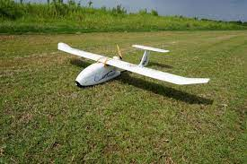
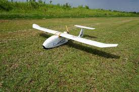

UAV Choicer 是一款專門為無人機愛好者設計的選擇輔助工具。面對眾多的無人機選項，UAV Choicer 旨在幫助使用者根據自己的需求和興趣，推薦最合適的無人機類型。
透過一系列的問題，此工具將考量使用者對於飛行器的喜好、預期的用途、技能水平等多種因素，並對每一個選項給予權重，最後給出一個依據個人特質的無人機推薦結果。結果包含四大類：四軸飛行器/穿越機、直升機、固定翼/滑翔翼以及DIY自組無人機。
可以先看看下面影片，參考以下你想像中的UAV是怎的一個存在。
 

 ArduPilot Taipei Facebook群組
ArduPilot Taipei Facebook群組
 UAV_Choicer GitHub項目
UAV_Choicer GitHub項目